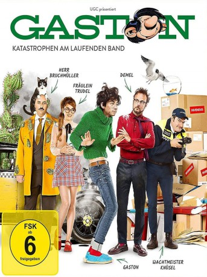

#10599 Gaston - Katastrophen am laufenden Band
 gesehen am 29.01.2019
gesehen am 29.01.2019
 
 IMDB-Wertung: 4.2 / 10
IMDB-Wertung: 4.2 / 10  Metascore: 0
Metascore: 0 
Spielfilm-Adaption des beliebten Comics, von Erschaffer Franquin. Der Praktikant Gaston, der immer einen grünen Rollkragenpullover trägt, treibt seinen Chef und seine Kollegen mit seiner Tollpatschigkeit zur Weißglut. Außerdem ist der junge Mann faul, inkompetent und noch dazu rotzfrech. So hängt er schon einmal mitten im Büro seine Hängematte auf oder treibt Schabernack mit der örtlichen Fauna.
Jahr: 2018
Dauer: 82 Minuten
FSK: 6
Land: Frankreich Studio: Koch MediaTonspuren:
Untertitel: Deutsch,
Auflösung: 1080p (1920x1040) Größe: 4628 MB
Genre: Komödie
Regisseur: Pierre-François Martin-Laval
Drehbuch: Pierre-François Martin-Laval, Mathias Gavarry, André Franquin
Soundtrack: Christian Lundberg
Darsteller:
- Théo Fernandez als Gaston Lagaffe
- Pierre-François Martin-Laval als Prunelle
- Arnaud Ducret als Longtarin
 Nicky Naudé als Pilot hélico gendarmerie
Nicky Naudé als Pilot hélico gendarmerie Stéphane De Groodt als Voix PDG
Stéphane De Groodt als Voix PDG- Isabelle Nanty als Voix du hall
- Perrine Lenzini als Employée Lepeticoin
- Isaline Ponroy als Employée Lepeticoin
- Jérôme Commandeur als De Mesmaeker
- Alison Wheeler als Mademoiselle Jeanne
- Franc Bruneau als Lebrac
- Christophe Canard als Boulier
- Sébastien Chassagne als Raoul
- Maka Sidibe als Jeff
- Charlotte Gabris als Sonia
- Jimmy Labeeu als Jules-de-chez-Smith-en-face
- Estéban als Bertrand Labévue
- Silvie Laguna als Mademoiselle Kiglouss
- Léon Plazol als Edern
- Anne Benoît als Le médecin
- Amine Azzouz als Employé Lepeticoin
- Cécile Bonansea als Employée Lepeticoin
- Lisa Bouamar als Employée Lepeticoin
- Maude Buinoud als Employée Lepeticoin
- Geoffrey Couët als Employé Lepeticoin
- Adélaïde Darasse als Employée Lepeticoin
- Adrien Darricau als Employé Lepeticoin
- Nathalie Dodivers als Employée Lepeticoin
- Laure Donnadieu als Employée Lepeticoin
- Tibo Drouet als Employé Lepeticoin
- Najim El Atouani als Employé Lepeticoin
- Malik Elakehal El Miliani als Employé Lepeticoin
- Maxime Flourac als Employé Lepeticoin
- Charlotte Garet als Employée Lepeticoin
- Laetitia Langlet als Employée Lepeticoin
- Mathieu Lestrade als Employé Lepeticoin
- Farah Mahlaoui als Employée Lepeticoin
- Milan Marangone als Employé Lepeticoin
- Guillaume Marty als Employé Lepeticoin
- Dimitri Mazzuchini als Employé Lepeticoin
- Carlotta Moraru als Employée Lepeticoin
- David Nguyen als Employé Lepeticoin
- Jean Pavageau als Employé Lepeticoin
- Kevin Poli als Employé Lepeticoin
- Lydia Robert als Employée Lepeticoin
- Rémy Rutovic als Employé Lepeticoin
- Olivier Ballet als Livreur
- Ludovic Marchand als Déménageur
- Robin Welch als Capitaine cargo
- Inès Martin-Laval als Enfant cargo
Datei: X:\Comic-Filme\Gaston - Katastrophen am laufenden Band (2018, FSK6, 1920x1040).mkv seit 29.01.2019
Festplatte: Comicverfilmungen+MusikCD
 Es gibt insgesamt 44 Filme in der Gruppe 'Comic-Filme'
Es gibt insgesamt 44 Filme in der Gruppe 'Comic-Filme'